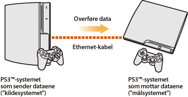
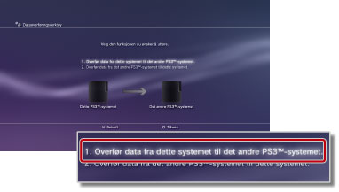
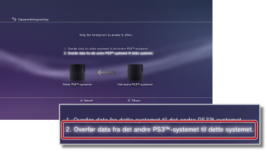

Innstillinger > Systeminnstilling > Dataoverføringsverktøy
Dataoverføringsverktøy
Du kan nå overføre (kopiere eller flytte) data som er lagret på hardisken til et PS3™-system til harddisken på et annet PS3™-system med en Ethernet-kabel.

Merknader
- Når du gjør dette, vil alle dataene som er lagret på PS3™-systemet som mottar dataene ("målsystemet") bli slettet.
- Data som er slettet kan ikke gjenopprettes. Utvis derfor forsiktighet slik at du ikke utilsiktet sletter viktige data. Tap av data eller skadet data er brukerens ansvar.
- Visse typer data kan ikke overføres. Velg her for informasjon.
Klargjøre systemene for overføring av data
Du må utføre følgende trinn før du starter dataoverføringen.
1. |
Oppdater systemprogramvaren på begge PS3™-systemene til den siste versjonen. |
|---|---|
2. |
Klargjør PS3™-systemet som skal sende dataene ("kildesystemet"). |
- Opprett en PlayStation®Network-konto for brukere som ikke har en konto.
- - Velg
 (PlayStation®Network) >
(PlayStation®Network) >  (Sign Up for PlayStation®Network), og følg anvisningene på skjermen for å opprette en konto.
(Sign Up for PlayStation®Network), og følg anvisningene på skjermen for å opprette en konto. - Deaktiver PS3™-systemet dersom dataene som skal overføres har innhold som har blitt kjøpt fra PlayStation®Store.
- - Velg (PlayStation®Network) >
 (Konto Administrasjon) >
(Konto Administrasjon) >  (System Activation).
(System Activation). - Ta sikkerhetskopi av, eller "synkroniser", trophy-informasjonen på PS3™-systemet med PlayStation®Network-serveren hvis du vil overføre trophy-informasjon.
- - Logg deg på PlayStation®Network, og velg
 (Spill) >
(Spill) >  (Trophy-samling).
(Trophy-samling). - Logg deg på
 (PlayStation®Home) før dataene overføres dersom du har mottatt priser for bruk i (PlayStation®Home) på kildesystemet.
(PlayStation®Home) før dataene overføres dersom du har mottatt priser for bruk i (PlayStation®Home) på kildesystemet. - Ta sikkerhetskopi av profilinformasjonen og trinnene du opprettet i LittleBigPlanet™ for det lagrede spillet Du kan deretter bruke de sikkerhetskopierte dataene når du spiller LittleBigPlanet™ på PS3™-målsystemet.
Merknad
Hvis du overfører dataene uten å opprette en PlayStation®Network-konto, gjelder følgende begrensninger:
- Det kan hende du ikke kan bruke de lagrede dataene på PS3™-målsystemet.
- Det kan hende du ikke lenger kan oppnå trophies ved bruk av de lagrede dataene du har overført.
- Trophy-informasjon er ikke overført.
Overføring av data
Slå av begge PS3™-systemene, og utfør følgende trinn. Hvis de overførte dataene er lagrede spilldata som det er forbudt å kopiere eller dataene er opphavsrettsbeskyttet, vil dataene bli flyttet til PS3™-systemet og slettet fra PS3™-kildesystemet.
1. |
Lag en direkte kobling mellom de to PS3™-systemene ved bruk av en Ethernet-kabel. |
|---|---|
2. |
Koble PS3™-systemene til forskjellige videoinngangskontakter på TV-en. |
3. |
Slå på TV-en og PS3™-systemene. |
4. |
På PS3™-kildesystemet, velger du |
5. |
Velg [1. Overfør data fra dette systemet til det andre PS3™-systemet.].  Hvis du ikke fullførte trinnene for klargjøring som ble beskrevet tidligere, følg anvisningene på skjermen for å utføre disse trinnene. |
6. |
Når PS3™-systemet venter på å starte dataoverføringen, bruk TV-ens fjernkontroll til å bytte til videoinngangen for å vise skjermen på PS3™-målystemet. |
7. |
På PS3™-målsystemet, velger du |
8. |
Velg [2. Overfør data fra det andre PS3™-systemet til dette systemet.].  Følg anvisningene på skjermen for å fullføre overføringen. |
 (Innstillinger) >
(Innstillinger) >  (Systeminnstilling) > [Dataoverføringsverktøy].
(Systeminnstilling) > [Dataoverføringsverktøy].Tips
- Når dataoverføringen er fullført, kan du slå av PS3™-kildesystemet. Still TV-en til å vise skjermen på PS3™-kildesystemet. Deretter velger du
 (Brukere) >
(Brukere) >  (Slå av systemet).
(Slå av systemet). - Hvis du har overført innhold som har blitt lastet ned fra PlayStation®Store, må du aktivere PS3™-målystemet før du kan bruke dataene. Logg inn på PS3™-systemet som brukeren som eier innholdet. Velg deretter (PlayStation®Network) > (Konto Administrasjon) > (System Activation) for å aktivere systemet.
Begrensninger for dataoverføringsverktøyet
Noen typer data kan ikke overføres ved bruk av dataoverføringsverktøyet, og noen typer data kan overføres men de kan ikke spilles av på PS3™-målsystemet.
Besøk nettsiden til SCE for ditt område for den siste informasjonen. Følgende datatyper kan ikke overføres:
- Videoinnhold som har blitt lastet ned som leid innhold fra PlayStation®Store (filtype: MNV)
- Spor (inkludert "sangpakker") for programvaren SingStar™ som har blitt lagret på harddisken på PS3™-systemet
- Opphavsrettsbeskyttede videofiler (filtyper: MGV og ETS)
- Videofiler som er kompatible med DivX® VOD (Video On Demand)-tjenesten
For å kunne bruke dataene må du utføre noen ekstra trinn for de følgende datatypene etter at dataoverføringen er fullført:
- Applikasjonsdata for Life with PlayStation®
- - Last ned og installer applikasjonen Life with PlayStation® på PS3™-målsystemet. Du kan fortsette å tjene opp bidragspoeng for PlayStation®Network-rankingsystemet i Folding@home™-kanalen.
- GripShift™
- - En feilmelding vises første gang du starter spillet etter dataoverføringen, og du vil ikke kunne spille spillet. For å kunne spille spillet må du laste ned og installere det på nytt.
- Lagrede data for Ghostbusters™ og Ghostbusters™: Videospillet
- - Det lagrede spillet vil ikke bli gjenkjent første gang du starter spillet etter dataoverføringen. For å bruke de lagrede dataene, må du avslutte spillet og deretter starte spillet på nytt.
Tips
Enkelte programvaretitler selges kanskje ikke i enkelte regioner.